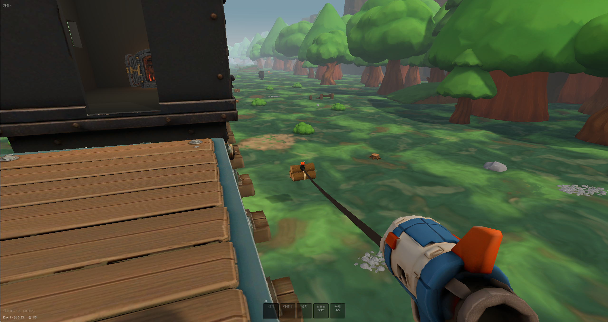
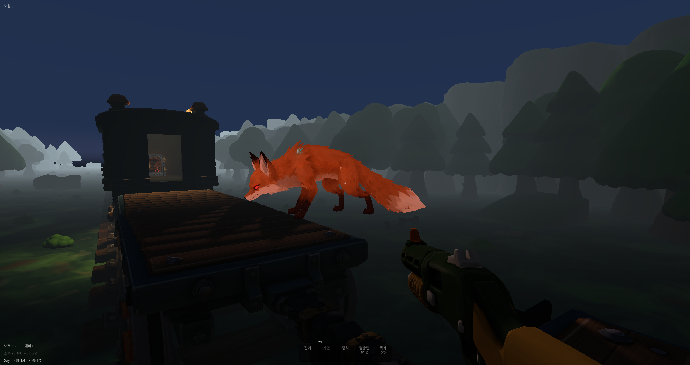
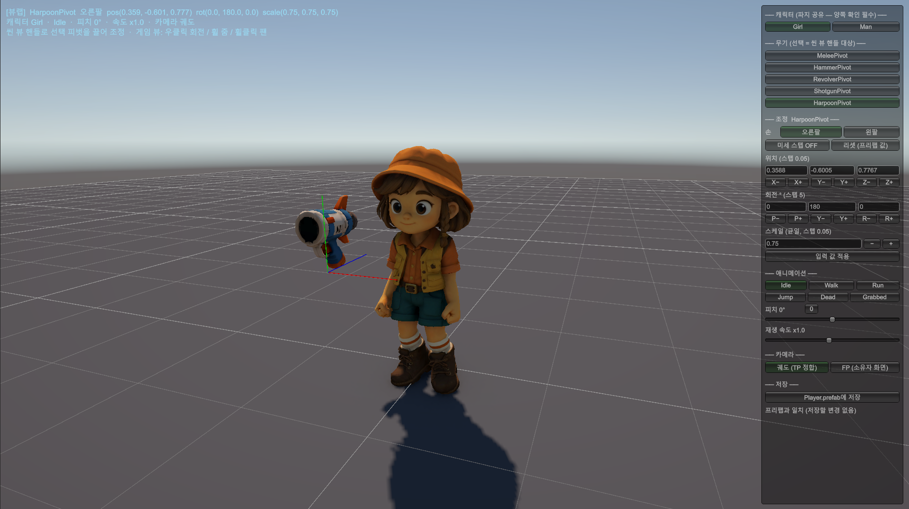

낮에 모은 것으로 밤을 버티고, 버틴 만큼 열차가 더 멀리 간다. 하루가 끝날 때마다 난이도가 오르고, 3~5일마다 지역(계절)이 바뀝니다.
Day집게로 자원 채집달리는 열차에서 지상의 자원을 집게로 낚아챕니다. 제작 · 건설 · 요리 · 열차 증설의 재료가 됩니다.
Night웨이브 방어몬스터가 열차에 달라붙습니다. 칸이 파괴되면 연결이 끊기고 뒤쪽 편성이 통째로 이탈합니다.
Day +1난이도 상승 · 지역 전환웨이브 물량과 몬스터 종류가 늘고, 3~5일마다 지역이 바뀌어 날씨 압박이 달라집니다.
Final우주 진입궤도 도약 기관을 완성해 대기권을 벗어나면 클리어. 중간 저장은 없고, 런은 단일 세션으로 완주합니다.
연료가 이 게임의 시계입니다. 자동 충전이 아니라 기관차 엔진에 직접 넣어야 해서
채집 → 운반 → 투입이라는 협동 동선이 생깁니다. 연료가 마르면 열차가 느려지고, 느려지면 추격이 시작됩니다.
역할을 나누지 않으면 낮에 모으기만 하다 밤을 맞습니다.

낮 — 채집

밤 — 방어
규모
공개 저장소에서 그대로 확인할 수 있는 수치만 적었습니다. 측정 기준은 git ls-files로, 커밋되지 않은 로컬 파일은 세지 않았습니다.
639커밋 전부 단독 작성
48,575 줄프로덕션 코드 C# 350파일
884EditMode 테스트 통과 83파일 · 12,521줄
105설계 · 규약 · 계획 문서 기획서 · 결정서 · 검증 기록
6런타임 어셈블리 의존 방향 단방향 고정
구현 내용
게임 플레이를 구성하는 5가지 핵심 시스템입니다. 각 시스템의 기능과 구현 구조, 데이터 관리 방식을 함께 소개합니다.
01
집게 — 달리는 열차에서 세계를 낚아챈다
HarpoonController · GrabValidation
기능
발사 → 명중 → 호스트 승인 → 견인 → 획득이 하나의 파이프라인입니다. 지상의 자원만이 아니라 몬스터도 낚아채 끌어오고, 든 채로 이동해 아군 앞이나 열차 바퀴에 넘겨 처치합니다. 제작으로 3단계까지 승급하면 더 무거운 것이 들립니다.
기술
로컬 선반영 + 호스트 권위입니다. 쏜 클라이언트가 즉시 연출을 재생하고, 승인·거부는 호스트가 확정합니다. 조작 상태와 훅 비행 상태를 서로 다른 두 상태 기계로 분리했고(둘 다 순수 C#), 승인 판정도 GrabValidation 순수 함수라 EditMode에서 전 경계를 검사합니다. 대상은 IGrabbable 한 계약으로 묶여 자원 · 몬스터 · 창고 보따리가 같은 코드를 탑니다.
복제
등급을 NetworkVariable<byte>로 복제해 남의 화면에 보이는 코스메틱 훅도 같은 궤적을 그립니다. 호스트 응답이 끝내 오지 않는 경우를 대비해 1.5초 안전 타임아웃을 두었고, 그 값의 근거는 악조건 실측(승인 지연 최대 135 ms)에서 나왔습니다.
수치
등급별 사거리 20 / 26 / 32 m · 견인 속도 8 / 11 / 14 m/s · 무게 상한 1 / 2 / 3 · 빗나감 페널티 2.5 / 1.8 / 1.2초. 투사체는 40 m/s로 날고 1.2 m 안에 들어오면 도착 확정입니다.
칸과 연결부에 각각 내구가 있습니다. 칸이 부서지면 그 뒤 편성 전체가 이탈해 뒤로 밀려나고, 손잡이를 잡아 사람 힘으로 끌어와야 다시 붙습니다. 45 m를 넘기면 영영 잃습니다. 망치로 부위를 겨눠 수리하고, 자원을 들여 최대 5량까지 증설합니다.
기술
칸·연결부·건축물·이탈 오프셋·손잡이 인원을 NetworkList 다섯 개로 한 컴포넌트가 소유합니다. 쪼개지 않은 이유는 재접속 후발 동기화의 순서 의존 때문입니다 — 칸은 왔는데 연결부가 아직 안 온 중간 상태를 소비자가 보게 됩니다.
원자성
모든 서버 변이가 같은 네 단계를 지납니다 — 스냅샷 → 순수 함수 판정 → 일괄 반영 → 이벤트 발행. 판정이 NetworkList API에 묶여 있지 않아 부분 적용 상태가 복제될 여지가 없고, 규칙 전체를 씬 없이 검사할 수 있습니다.
제약
연결부는 살아 있는 것 중 가장 후미만 때릴 수 있습니다. 중간을 먼저 끊으면 편성 배열에 구멍이 생겨 재건·재결합 규칙이 복잡해지기 때문입니다 — "끝에서부터"라는 제약 하나가 상태 공간을 좁힙니다. 이탈 물리도 순수 함수입니다: 밀림 속도 = 스크롤 + 2 m/s, 감속 4 m/s², 1인당 견인력 6 m/s.
총기 3종(리볼버 · 샷건 · 볼트액션) + 근접 + 수리 망치, 탄약 3종을 제작해 씁니다. 밤마다 웨이브가 몰려와 열차에 달라붙고, 지역 마지막 밤에는 지역 보스가 나옵니다 — 보스를 잡기 전에는 새벽이 오지 않습니다.
기술
산탄은 시드 결정적입니다. 쏜 사람이 시드를 만들어 지연 0으로 즉시 연출하고, 호스트가 그 시드를 그대로 브로드캐스트하면 다른 피어가 같은 시드로 펠릿 궤적을 재계산합니다. 난수를 복제하지 않고도 모두가 같은 탄착을 봅니다. 데미지는 호스트가 거리와 펠릿 상한을 재검증한 뒤 확정합니다.
데이터
무기 차이는 전부 설정 에셋 안에 있습니다 — 샷건과 볼트액션이 컴포넌트 코드 0줄로 성립했습니다. 연사·펠릿 수·산탄각·장탄·재장전이 모두 필드라, 새 총을 만드는 일이 에셋을 하나 더 만드는 일이 됩니다.
몬스터
호스트가 조향을 시뮬레이션하고 클라이언트는 저주기 스냅샷을 지연 보간합니다. 조향 계산은 순수 함수이며, 추격 속도가 월드 스크롤 속도보다 빠르도록 강제하는 규칙이 그 안에 있습니다 — 그렇지 않으면 몬스터가 영원히 따라오지 못합니다.
숲(봄) → 사막(여름) → 대초원(가을) → 북극(겨울)이 3~5일 주기로 순환합니다. 지역마다 환경 온도 · 자원 구성 · 지형 · 웨이브 배율이 다르고, 날씨가 그 위에 얹힙니다. 하루가 지날 때마다 난이도가 오르고, 지역 마지막 밤은 대형 웨이브 + 보스입니다.
기술
지역은 네트워크 상태가 아닙니다. 지역 인덱스 · 지역 내 일차 · 마지막 날 여부 · 다음 지역 예고 · 순환 횟수가 전부 Day 번호 하나에서 순수 함수로 파생됩니다. 그래서 지역 컨트롤러는 NetworkBehaviour조차 아닌 일반 MonoBehaviour이고, 복제할 것이 늘지 않으므로 어긋날 여지도 없습니다.
실증
이 구조의 효과는 후속 작업에서 확인됐습니다. 숲·사막 2종으로 시작했지만, 후반부 작업에서 대초원과 북극을 추가할 때 코드 변경은 0줄이었습니다 — 지역 정의(일수 · 난이도 배율 · 환경 온도 · 지형/자원 프리팹)가 전부 에셋이기 때문입니다.
생존
지역이 공급하는 환경 온도 위에서 체온과 허기가 돕니다. 돔이 햇빛을 막고 난방기가 데우며, 요리한 음식이 허기를 채우고 버프를 겁니다. 북극에서는 부위별 동상과 식량 수급 불가가 겹쳐, 앞 지역에서 비축한 것을 그대로 소모시킵니다.
게임 규칙이 되는 계산은 MonoBehaviour·NetworkBehaviour 안에 두지 않습니다. *Math/*Logic36개 파일이 Unity 의존 없는 static 함수로 분리되어 있고, 컴포넌트는 그 함수를 호출해 결과를 배치하는 일만 합니다.
이유
재현 비용이 큰 상태 변화를 빠르게 검증하기 위한 구조입니다. 예를 들어 "칸 3개가 파괴되면 뒤쪽 편성이 통째로 이탈하는가" 같은 규칙은 플레이 모드에 들어가지 않고 입력값만 구성해 바로 검사할 수 있습니다.
결과
EditMode 884개가 씬 없이 수 초 안에 돕니다. 게임 코드에서 이 정도 테스트 밀도가 나오는 것은 재능이 아니라 계산을 어디에 두느냐의 문제였습니다.
한계
자동 테스트가 다루지 못하는 영역도 분리했습니다. 연출·손맛·네트워크 타이밍은 차수별 플레이 검증 항목으로 관리하고, 확인 결과를 같은 문서에 남겨 자동 테스트의 범위와 수동 검증의 범위를 구분했습니다.
03
읽기 계약과 변이 API를 가른다
ITrainState · 조회 전용
문제
열차 편성 상태는 HUD·칸 표현·몬스터·건축·연료가 전부 들여다보는 중심 데이터입니다. 이런 상태에 아무나 접근할 수 있으면, 어느 날 UI 코드가 표시하려고 읽다가 슬쩍 고치는 일이 생깁니다. 그러면 호스트 권위가 무너지고 원인 추적이 불가능해집니다.
결정
인터페이스에는 조회만 넣고, 변이는 ServerXxx 메서드로 인터페이스 밖에 두었습니다. 소비자는 ServiceLocator에서 ITrainState로 받으므로 변이 API에 의존하는 것 자체가 불가능합니다. 이름 규약으로 부탁하는 게 아니라 타입으로 막습니다.
확장
인터페이스는 단순 게터가 아니라 "소비자가 실제로 묻는 질문"으로 설계했습니다. TryGetCarAtZ(이 지점은 어느 칸 위인가) · TryGetNearestStructure(가장 가까운 그 건축물은) 같은 형태입니다. 각자 편성을 순회하면 이탈 오프셋 반영을 빠뜨리는 곳이 반드시 생기기 때문에, 순회 지점을 상태 쪽에 하나로 모았습니다.
검증
리팩터링을 검토할 때 이 인터페이스의 분할(ISP)도 후보에 올렸지만, 소비자가 16개 멤버를 실제로 대부분 사용하고 빈 구현을 강요받는 구현체가 없어 위반이 아니라고 판단해 그대로 두었습니다.
1~4인 협동 PvE이고 PvP가 없습니다. 전용 서버가 존재하는 이유는 대개 치팅 방지와 대규모 동시 접속인데, 둘 다 이 게임에는 없습니다. 그래서 호스트 권위(P2P) + Steam 릴레이로 확정하고, 백엔드는 매치메이킹·릴레이만 쓰기로 했습니다.
선례
이 판단에 확신을 준 것은 MECCHA CHAMELEON입니다. 에픽 온라인 서비스(EOS)를 매치메이킹·네트워킹 백엔드로 얹어 서버 인프라 비용을 들이지 않고 대규모 동시 접속을 감당했고, 2026년 8월 기준 2,000만 장이 팔렸습니다. 소규모 팀이 플랫폼이 무료로 주는 백엔드 위에 P2P를 얹어 그 규모를 굴렸다는 것이, 전용 서버가 협동 게임의 전제가 아니라는 실증이었습니다.
적용
다만 EOS를 그대로 가져오지는 않았습니다. 이 프로젝트는 Steam 단독 출시고, Steamworks가 같은 역할(릴레이·로비·프렌드 초대)을 이미 합니다 — 스토어와 계정이 Steam인데 EOS를 얹으면 계정 체계가 하나 더 붙습니다. 그래서 구조는 같게, 공급자만 Steam으로 취했고 러닝 코스트는 같은 0원입니다. 결정서의 재검토 조건을 "콘솔 등으로 확장해 Steam 비종속 릴레이가 필요해질 때"로 적어 둔 것도 이 때문이고, 그 시점에 다시 볼 후보가 EOS입니다.
효과
이 결정 하나가 클라이언트 예측·랙 보상 시스템을 통째로 없앱니다. 플레이어 소유 요소(이동·시점·사격 명중)는 소유자 권위로 완화해 지연을 0으로 만들고, 데미지 확정·사망·몬스터 AI·열차 상태는 호스트가 단독으로 소유합니다. 치팅 리스크는 수용했습니다 — Deep Rock Galactic·Raft와 같은 판단입니다.
기록
결정서에는 기각한 대안(Photon Fusion 2)과 그 이유, 그리고 밤 웨이브 대역폭·집게 손맛 같은 리스크와 완화책까지 함께 기록했습니다. 추후 구조를 재검토할 때 당시의 전제를 확인하기 위한 기준점입니다.
상태 / 판정
권위
근거
자기 캐릭터 이동 · 시점
각 클라이언트
지연 0. 예측·보정 코드가 필요 없어진다
사격 명중 판정
쏜 클라이언트
로컬 레이캐스트로 판정 후 호스트에 보고
데미지 적용 · 사망 확정
호스트
명중 보고를 받아 확정 — 판정과 확정을 분리
개인 인벤토리 증감
호스트
개인 소유물이라도 복제(dupe) 방지를 위해 호스트 확정
열차 상태 · 연쇄 이탈
호스트
원자적 상태 변화로 전파. 재접속 복원의 원천
월드 스크롤 속도
호스트
NetworkVariable 단 하나 — 연료 감속·추격·최종 가속의 유일한 제어 값
05
열차가 아니라 세계가 흐른다
기준 좌표계 결정
문제
열차가 실제로 월드를 달리면, 16일 이상 주행 시 원점에서 수백 km 떨어져 부동소수점 정밀도가 무너집니다. 물리가 지터를 일으키고 렌더링이 떨립니다. 게다가 열차 위 플레이어는 달리는 이동 플랫폼 위의 캐릭터가 되어, 호스트 권위(열차)와 소유자 권위(플레이어)가 겹치는 동기화 난제가 생깁니다.
결정
열차를 원점에 고정하고 지형·트랙·배경이 열차를 지나쳐 스크롤하게 했습니다. 열차가 정지 프레임이 되므로 월드 좌표 = 열차 로컬 좌표이고, NetworkTransform을 보정 없이 그대로 씁니다. 이동 플랫폼 문제가 해결되는 게 아니라 존재하지 않게 됩니다.
결정타
정밀도보다 연출 상한이 결정적이었습니다. 최종장의 초가속·공간 왜곡 연출은 실제 이동 방식에서는 극한 속도에서 좌표가 붕괴해 사실상 구현 불가입니다. 스크롤 방식에서는 속도 파라미터를 올리기만 하면 됩니다.
대가
대가도 있습니다. 지상 오브젝트(자원·몬스터·이탈한 칸)를 컨베이어처럼 역방향 이동시켜야 하고, 지형은 타일 스트리밍이 필요합니다. 다만 무한 트랙 구조상 스트리밍은 기본 요구사항이어서 이 방식만의 추가 비용은 크지 않았습니다. 몬스터가 열차에 올라타면 같은 좌표 프레임으로 편입되어 별도 전환 처리도 필요하지 않습니다.
판단 축
열차 실제 이동 (기각)
열차 고정 + 월드 스크롤 (채택)
연출 상한
초가속에서 물리·좌표 정밀도 붕괴
상한 없음 — 속도 변수 하나
부동소수점
수백 km 이탈 → 지터·떨림
항상 원점 부근. 영구 안전
네트워크
이동 플랫폼 지터 — 별도 체계 필요
NetworkTransform 그대로
캐릭터 물리
플랫폼 속도 상속 처리 상시 필요
정지 바닥 — 일반 1인칭 코드
06
풀링을 네트워크 스폰 안까지 밀어넣는다
PooledNetworkPrefabHandler
문제
밤 웨이브는 몬스터·투사체·이펙트를 한꺼번에 쏟아냅니다. Instantiate/Destroy를 그대로 쓰면 GC 스파이크가 전투 중에 터집니다. 그런데 NGO는 네트워크 스폰을 자체적으로 처리해서, 일반 오브젝트 풀만 만들어 두면 네트워크 오브젝트는 그대로 빠져나갑니다.
이 구조는 두 조건이 맞지 않으면 런타임에서 누수가 발생합니다. ① 서버에서 Despawn(destroy: true)로 호출해야 합니다. false면 NGO가 파괴 경로를 타지 않아 풀로 돌아오지 않습니다.② 풀링 프리팹은 AutoObjectParentSync를 꺼야 합니다. 디스폰 시 풀 아래로 재부모화한 인스턴스를 NGO가 되돌리며 에러를 내기 때문입니다.
방어
둘 다 런타임에 조용히 새는 종류의 결함이라, 핸들러 생성자에서 NetworkObject 유무와 AutoObjectParentSync 설정을 검사해 즉시 예외를 던지게 했습니다. 잘못 설정한 프리팹은 등록 시점에 죽습니다.
공유 창고는 팀 전원이 쓰는 보관함인데, 하필 부서지고 떨어져 나가는 것 위에 있습니다. 칸이 파괴되고, 이탈했다가 다시 결합하고, 건축물만 따로 철거되기도 합니다. 창고마다 별도 컨테이너를 만들면 그때마다 생성·소멸·재탐색이 붙고, 순번으로 식별하면 앞의 칸이 사라질 때 뒤가 전부 밀립니다.
해결
저장 블록의 식별을 순번이 아니라 건축물의 서버 발급 Id로 두었습니다. 슬롯은 창고마다 리스트를 나누지 않고 평탄한 NetworkList 하나에 담고, 블록 i의 슬롯은 i × 슬롯 수 + 칸 내 인덱스로 찾습니다. 소유 관계는 NetworkList<ushort> 한 줄이 담보합니다 — 설치는 append, 파괴는 swap-remove입니다.
이탈
이탈은 해제가 아닙니다. 칸이 뒤로 떨어져 나가도 블록은 Id로 남고, 재결합하면 내용물이 그대로 돌아옵니다. 해제는 정말 부서졌을 때만 일어납니다. 순번 기반이었다면 이 구분 자체가 성립하지 않습니다.
확장
"공유 저장 블록을 갖는 종류"는 코드가 아니라 건축물 카탈로그가 판정합니다. 창고 계열이 늘어도 이 스크립트는 수정하지 않습니다. 할당·해제는 이벤트 구독 대신 확정 지점에서 직접 호출하게 두어, 누락 시 검토 과정에서 드러나도록 했습니다.
배당
개인↔창고 · 창고 내 재배치 · 개인↔보따리가 전부 같은 순수 함수 하나를 지납니다. 컨테이너는 바이트 하나로 식별하고 배열만 교체하므로, 보따리 기능을 추가할 때도 전송 RPC만 신설해 병합·스왑·무기 이동 규칙을 재사용할 수 있었습니다.
창고에는 팀 전체의 물자가 쌓입니다. 그런데 칸은 실제로 파괴됩니다. 소실로 처리하면 밤 한 번에 게임이 끝날 수 있고, 반대로 파괴에 대가가 없으면 열차를 지킬 이유가 사라집니다. 둘 다 게임을 망칩니다.
해결
파괴 시 슬롯 전체를 담은 단일 보따리를 배출합니다. 해제 모드를 셋으로 갈랐습니다 — 건축물만 파괴(칸 생존)면 그 자리 갑판 위에 놓이고, 칸 파괴면 지상 선로변으로 던져지며, 잔해 제거는 소실입니다(파괴 시점에 이미 보따리가 나왔으므로 여기서 또 내면 이중 생성).
대가
대가는 열차가 멈추지 않는다는 것이 만듭니다. 지상에 떨어진 보따리는 그대로 뒤로 흘러가므로, 되찾으려면 집게로 낚아채러 가야 합니다. 잃는 것이 물자가 아니라 회수할 시간과 위험이 됩니다.
표현
칸 파괴 투척은 (시작 위치 · 착지 위치 · 시작 시각)만 복제하고 각 피어가 같은 포물선을 로컬 재생합니다. 프레임 동기화가 없으니 떨리지 않고, 시간축이 동기화된 서버 시각이라 늦게 접속해도 같은 지점을 봅니다 — 월드 떨림 문제에서 검증한 처방을 재사용한 사례입니다.
회수
집게가 닿으면 일괄 획득입니다. 전부 들어가면 풀어서 수납하고 소멸하고, 한 칸이라도 모자라면 보따리 자체가 아이템 1칸이 됩니다. 그런데 인벤토리 슬롯은 (종류 · 수량 · 자원) 셋만 담습니다. 그래서 내용물은 서버가 맡아 두고 슬롯의 수량 필드에 보관 id만 싣습니다 — 슬롯 표현을 넓히는 대신 있는 필드를 다시 읽었습니다. 세션 한정이라는 한계는 코드 주석에 적어 두었습니다.
절제
넣지 않기로 한 것이 더 많습니다. 내구도 없음 — 공격에 부서지면 "회수 기회"라는 존재 이유가 사라집니다. 중첩 파괴 병합 없음 — 창고 하나 = 보따리 하나. 비행 중에는 3단계 집게만 낚아챌 수 있는데, 이것도 새 상태가 아니라 기존 등급 검증 축에 예외를 실은 것입니다.
재사용
낙하·안착은 새로 만들지 않았습니다. 지상 자원이 쓰던 파이프라인(갑판 휴지 · 하강 로컬 재생 · 이탈 칸 추종 · 후방 소실 회수)을 공용화해 보따리가 그대로 탑니다. 보따리에만 있는 것은 슬롯을 갖는다는 점뿐입니다.
문제 해결
대표적인 런타임 문제를 증상 · 원인 · 해결 · 검증 순서로 정리했습니다.
01
클라이언트에서만 월드가 떨리던 문제
열차 이탈 · 월드 스크롤
증상
클라이언트가 뒤로 밀려나는 이탈한 칸에 올라타면 지상 자원과 지형이 미세하게 떨려 보였습니다. 호스트에서는 같은 상황에서 떨림이 없었습니다.
원인
이탈 오프셋은 30Hz 네트워크 틱의 계단으로 복제되는데, 지형은 월드 스크롤로 매 프레임 연속 이동했습니다. 복제 값의 변화량으로 속도를 추정하면 틱 도착이 프레임 경계에 걸릴 때 1~3프레임 간격으로 흔들렸고, 실제 8 m/s가 16 / 8 / 5.3 m/s처럼 널뛰었습니다.
해결
속도를 추정하지 않기로 했습니다. 클라이언트도 호스트와 같은 수식을 같은 입력으로 매 프레임 적분합니다. 빠져 있던 입력(손잡이를 잡은 인원)을 NetworkList<int>로 복제해 채우고, 복제된 오프셋은 위치가 아니라 드리프트 보정 목표로만 씁니다(지수 감쇠 3/s, 오차 10 m 이상이면 즉시 스냅). 표시 이동이 복제 도착 타이밍과 완전히 무관해집니다.
검증
재작성한 테스트는 30Hz 계단 복제 아래에서 호스트 경로 추종(드리프트 ±0.3 m)과 프레임 전진량의 매끈함(±0.02 m)을 함께 검사합니다. 실제 2인 플레이에서도 월드 떨림이 사라진 것을 확인했습니다.
02
클라이언트 접속이 거부되던 문제 — 증상과 원인이 멀 때
네트워크 프리팹 · NGO 등록 규약
증상
호스트는 정상인데 클라이언트가 접속하자마자 ClosedByRemote로 끊겼습니다. 네트워크 코드를 아무리 봐도 원인이 없었습니다.
원인
네트워크 프리팹의 GlobalObjectIdHash 오염이었습니다. NGO는 이 해시로 양쪽이 같은 프리팹을 가리키는지 확인하는데, 프리팹 YAML을 직접 편집하면 해시가 어긋납니다. 원인이 네트워크가 아니라 에셋 쪽에 있어 추적 거리가 멀었습니다.
해결
NetworkObject를 가진 프리팹은 반드시 Unity가 발급하게(PrefabUtility 경유 저장) 규약을 고정했습니다. 손으로 YAML을 지으면 해시를 발급할 수 없기 때문입니다. 같은 이유로 DefaultNetworkPrefabs 중복 등록도 검사 대상에 넣었습니다.
검증
이후 "조용히 어긋나서 엉뚱한 증상으로 나타나는" 규약은 문서로만 남기지 않고, 생성자 검증이나 등록 시 예외로 바꿨습니다(설계 결정 06이 그 예입니다).
03
기능을 하나 끼워 넣자 드러난 잠재 결함
준비 화면 · 스폰 제어
증상
대기실을 추가한 뒤, 방을 열면 플레이어가 메뉴 화면에 스폰되어 카메라와 마우스 커서를 빼앗았습니다. 대기실 UI를 조작할 수 없었습니다.
원인
StartHost() 순간 NGO가 플레이어를 스폰하는데, 예전에는 씬 전환이 곧바로 이어져 그 틈이 한 프레임이라 아무도 눈치채지 못했습니다. 대기실이 그 사이에 들어오면서 틈이 수십 초로 벌어진 것입니다. 새로 생긴 버그가 아니라 원래 있던 결함이 드러난 것이었습니다.
해결
플레이어 컨트롤러에 이미 있던 배치 보류 게이트를 시점·커서 제어에도 걸었습니다. 새 상태를 만드는 대신 기존 게이트의 적용 범위를 넓히는 쪽을 택했습니다.
검증
2인 접속 검증은 에디터 한 벌로는 불가능해서, 로스터 상태의 접속·이탈 콜백을 리플렉션으로 직접 호출해 갱신 로직을 분리 검증했습니다. 실제 2인 플레이로만 확인 가능한 부분은 검증 문서에 남겨 사람 검증 대상으로 관리했습니다.
04
복제할 것을 줄이는 쪽으로 푼 동기화
대기실 · 로스터 동기화
증상
대기실 로스터에는 이름, 호스트 여부, 접속 상태, 자리 순서가 동시에 표시됩니다. 이 값을 각각 복제하면 동기화 대상이 4종이 되고, 하나만 늦게 갱신되어도 화면이 서로 다른 상태를 보여줄 수 있습니다.
원인
실제로 권위를 가져야 하는 값은 표시 문자열이 아니라 현재 접속한 플레이어의 순서였습니다. 표시용 상태를 따로 복제하면 원천 데이터가 여러 개로 늘어나고, 접속·이탈·재접속 시점마다 불일치 가능성이 생깁니다.
해결
복제하는 값은 NetworkList<ulong>하나로 제한했습니다. 이름은 칸 번호에서, 호스트 여부는 "첫 칸" 규칙에서, 접속 상태는 "목록에 있음"에서 파생합니다. 자리 배치 규칙(호스트는 언제나 첫 칸 · 나머지는 접속 순서 · 빈자리는 뒤로)은 순수 함수로 분리했습니다.
검증
접속 승인 페이로드를 건드리지 않아 기존 재접속 식별 기능을 유지했습니다. 빈자리를 뒤로 모으는 규칙도 테스트 대상에 넣어, 플레이어가 빠져도 로스터가 읽기 쉬운 순서를 유지하도록 고정했습니다.
05
집게가 한 프레임 늦게 따라오던 문제 — 그리고 호스트에서만 멀쩡했던 이유
집게 · 훅 · 로프 실행 순서
증상
몬스터를 집게로 들고 이동하는 동안 훅과 로프가 한 발씩 늦게 끌려왔습니다. 그런데 호스트 화면에서는 멀쩡했고 게스트 화면에서만 보였습니다.
원인
훅 추종과 로프 그리기가 Update에서 몬스터 위치를 읽는데, 파지 부착은 LateUpdate에서 몬스터를 옮기고 있었습니다. 그래서 훅·로프가 항상 지난 프레임의 위치를 봤습니다. 호스트는 서버 견인이 Update에서도 몬스터를 옮겨 오차가 가려졌고, 비호스트는 부착이 유일한 이동 경로라 지연이 그대로 드러난 것입니다.
해결
프레임 안의 순서를 "홀더 이동 → 파지 부착 → 훅 추종 → 로프 그리기"로 못 박았습니다. 부착에 DefaultExecutionOrder(-10)을 줘 같은 LateUpdate 단계에서 가장 먼저 돌게 하고, 훅 추종과 로프를 Update에서 LateUpdate로 옮긴 뒤 로프 쪽에 +10을 줘 부착·추종이 끝난 최종 위치로 그리게 했습니다.
검증
호스트와 게스트 화면을 따로 확인해, 서버 시뮬레이션이 가리던 지연이 비호스트 경로에서도 사라졌는지 봤습니다. 이후에는 실행 순서를 속성으로 고정해 컴포넌트가 늘어나도 같은 종류의 지연이 재발하지 않게 했습니다.
06
지상에서 옆을 보고 쏘면 훅이 조준점을 빗나가던 문제
집게 · 열차/월드 프레임
증상
열차 위에서는 정확한데, 지상에 내려서 좌우를 보고 집게를 쏘면 훅이 조준점 옆으로 흘렀습니다. 정면으로 쏠 때는 거의 티가 나지 않았습니다.
원인
이 게임은 열차가 원점에 고정되고 세계가 흘러옵니다(설계 결정 05). 그래서 같은 화면 안에 좌표 프레임이 둘 있습니다 — 열차 프레임과 월드 프레임. 지상의 자원은 월드와 함께 뒤로 밀려나는데 훅은 그 밀림을 받지 않아, 날아가는 동안 대상만 옆으로 빠졌습니다. 정면 발사에서는 밀림이 비행 방향과 같은 축이라 오차가 거리 오차로 흡수됐고, 측면에서만 조준 오차로 드러난 것입니다.
해결
발사 순간 사수가 어느 프레임을 딛고 있는지를 훅에 함께 넘깁니다. 지상에서 쏜 훅은 살아 있는 동안 매 프레임 세계와 같이 밀리고, 열차 위에서 쏜 훅은 밀리지 않습니다. 권위 경로와 남의 화면에 보이는 코스메틱 훅에 같은 값을 전달해 양쪽 궤적이 갈리지 않게 했습니다.
검증
권위 훅과 코스메틱 훅이 같은 프레임 소속 값을 쓰는지 확인했습니다. 이후 지상에 놓이는 것(자원·보따리·낙하물)은 전부 프레임 소속을 명시적으로 들고 다니도록 규약을 맞췄습니다.
QA — 조건을 만들고, 지표로 판정하고, 테스트로 고정한다
EditMode 884개는 순수 로직을 검증합니다. 네트워크 반응성·연출·손맛은 플레이 검증이 필요하므로, 먼저 상황을 재현하는 도구와 눈이 아니라 지표로 판정하는 기준을 만들었습니다.
01
상황 · 조건 · 판정 · 고정 — QA를 네 층으로 나눈다
QA 도구 · 상황 재현
층
도구
없으면 무엇이 막히는가
상황
QA 디버그 키 20종 — 숫자패드 15 + F열 5
밤·보스·경합·피격 상황의 재현 시간이 길어집니다. 같은 프레임에 두 피어를 조작하는 상황은 수동 조작만으로 만들기 어렵습니다
조건
네트워크 시뮬레이터 프로파일 — ② RTT 60 ms ± 10 · ③ RTT 120 ms ± 20 + 로스 2 %
"내 PC에서는 잘 되는데"가 됩니다. ②는 통과 조건, ③은 악조건 하한을 재는 참고 계측입니다
판정
계측 지표 Q1~Q5 + 카테고리별로 걸러 읽는 콘솔 로그(GameLog)
체감 품질이 주관 평가로 남습니다. 기준 프레임과 지연 시간을 남기지 않으면 다음 차수의 회귀를 잡아내기 어렵습니다
고정
판정 로직을 EditMode 테스트로 — TowMotionAnalyzerTests 10개 등
QA 디버그 키 20종 — 보스 소환·웨이브 정지·국면 점프·시간 배속(×16)·고정 피해·동시 경합 재현. 키가 20개가 되며 그룹이 네 행에 흩어지자 숫자패드의 물리적 행에 기능 그룹을 맞춰 8개를 재배치했습니다. 색이 그룹이고 회색은 QA가 쓰지 않는 키입니다 · 클릭하면 원본 크기
02
판정은 콘솔에서 난다 — 그래서 로그를 시스템으로 만들었다
로그 시스템 · 콘솔 판정
이 프로젝트의 플레이 검증은 상당 부분 콘솔 로그가 판정합니다. 창고 경합의 총량 두 줄, 피해 실측의 전/후 값, 그랩 승인·거부, 견인 계측의 회귀 경고 — 눈으로 보는 것이 아니라 로그를 읽고 통과·실패를 적습니다. 그래서 로그가 콘솔을 덮으면 검증 자체가 불가능해집니다. 처음에는 Debug.Log("[QaDebugHotkeys] …")처럼 태그를 손으로 붙였는데, 태그 표기가 파일마다 갈리고 필요 없는 계통을 끌 수단이 없었습니다. 그래서 모든 디버그 로그가 지나가는 단일 창구를 만들었습니다.
문제
처리
릴리스에 로그 비용이 남는다
Info·Warn에 [Conditional("UNITY_EDITOR")]·[Conditional("DEVELOPMENT_BUILD")]를 걸어 호출 자체가 컴파일에서 제거됩니다 — 로그 함수만 비는 것이 아니라 인자의 문자열 보간 비용까지 0이 됩니다. Error만 릴리스에 남깁니다. 배포판에서 사고를 진단할 수단은 있어야 합니다
보고 싶은 계통만 볼 수 없다
카테고리 16종을 비트 플래그로 두어 GameLog.Only(LogCategory.Harpoon)이면 그 계통만 남습니다. 에디터 창(Game/QA/Log Categories)에서 토글하고 각 줄의 "단독" 버튼으로 한 계통만 남길 수 있습니다. 설정은 EditorPrefs라 에디터를 껐다 켜도, 플레이 모드를 드나들어도 유지됩니다. Error는 이 필터를 무시합니다
태그를 손으로 적는다
[CallerFilePath]로 [Harpoon/HarpoonProjectile] 메시지가 자동 조립됩니다. 컴파일 타임 리터럴이라 호출 비용이 없고, 파일명 추출 결과와 enum 이름은 캐시해 매 호출 반복하지 않습니다. 호출부는 "어느 계통인가"만 고르면 됩니다
반복 경로가 콘솔을 덮는다
InfoLimited(key, limit) · InfoOnce(key) — 파일마다 카운터 필드를 만들지 않습니다. 메시지 끝에 (#3/10)이 붙어 몇 번째인지 보이고, 상태가 정상으로 돌아오면 ResetLimit(key)로 다시 알림을 받을 수 있습니다. 문자열 보간조차 아까운 매 프레임 경로에는 IsEnabled 가드를 씁니다
임시 진단 로그가 그대로 남는다
Diagnostics 카테고리를 따로 두어 "문제 해결 후 통째로 지운다"를 전제로 격리합니다. 버그를 쫓느라 심은 로그가 어느 것인지 나중에 구분할 수 있어야 지울 수 있습니다
도메인 리로드를 끄면 횟수 제한이 안 풀린다
[RuntimeInitializeOnLoadMethod(SubsystemRegistration)]으로 플레이 진입마다 카운터를 초기화합니다. 리로드를 꺼 두고 반복 검증할 때 "아까 열 번 찍혀서 이제 안 나오는" 상황을 막습니다
현재 39개 파일 128곳이 이 창구를 지나며, 스팸 제어(InfoLimited·InfoOnce)는 집게 진단과 자원 스포너 폴백처럼 매 프레임 도는 경로에 붙어 있습니다. 런타임 코드에 남은 Debug.Log는 서드파티 Steam 트랜스포트 13건과 에디터 검사 창 2건뿐입니다.
이 시스템의 효과는 로그를 예쁘게 만드는 것이 아니라 검증을 가능하게 하는 것입니다. 집게 하나를 볼 때 Harpoon만 켜면 30줄이 3줄이 되고, 그 3줄이 통과·실패의 근거가 됩니다. 앞의 창고 경합에서 "아무것도 옮기지 않은 총량 보존"을 잡아낼 수 있었던 것도 로그가 요청 전 / 확정 후 두 줄로 남았기 때문입니다.
03
손맛을 감상이 아니라 수치로
집게 · 반응성 계측
집게는 이 게임에서 가장 손맛이 중요한 조작이고, 동시에 네트워크를 가장 많이 타는 조작입니다. "좀 늦게 딸려오는 것 같다"로는 고칠 수도 통과시킬 수도 없어서, 수직 슬라이스 단계에서 목표치를 먼저 정하고 계측 로그를 붙였습니다.
지표
재는 것
목표
실측
Q1
발사 입력 → 로컬 연출 시작
1프레임 이내
전 발사 Δ0 프레임
Q2
로컬 명중 판정 → 화면상 견인 시작
프로파일 ② 250 ms 이내
평균 67~72 ms (57~85)
Q3
견인 중 워프·역행
악조건 ③에서도 없음
전 견인 0
Q4
판정 불일치율 (클라 명중 표시 후 호스트 거부)
1 % 미만 · 표본 100회+
101발사 · 거부 0 = 0 %
Q5
호스트 측 동일 계측 (체감 교차 확인)
—
100발사 Δ0 · 0 · 0
지표를 정의하는 단계에서 한 번 고쳤습니다. Q2의 시작점을 처음에는 발사 입력으로 잡았는데, 투사체 비행 시간이 거리에 종속(20 m = 0.5 s)이라 원거리에서는 어떻게 해도 250 ms를 넘습니다. 달성 불가능한 기준은 지표가 아니라 잡음이라, 시작점을 로컬 명중 판정으로 옮기고 입력 즉시성은 Q1이 따로 담당하게 나눴습니다.
계측은 한 번 재고 끝나지 않습니다. 이후 차수 검증마다 "Q1~Q4 로그가 그대로 나오는가"를 회귀 항목으로 넣어 손맛 지표가 떨어졌는지 봅니다. 지표 자체가 오염되지 않도록 규칙상 거부(집게 등급 부족)는 Q4 불일치에 세지 않는다는 것까지 별도 검증 항목으로 두었습니다 — 세면 숫자만 나빠지고 실제 품질은 그대로입니다.
04
게스트가 쏘면 대상이 순간이동하던 문제 — 지연을 지연으로 덮지 않기
집게 견인 · 클라이언트 예측
증상
게스트가 쏜 자원이 견인이 확정되는 순간 한 번 튀었습니다. 호스트에서는 같은 조작이 매끄러웠습니다.
원인
주범은 RTT 간극이었습니다. 서버는 그랩을 승인한 즉시 대상을 월드 컨베이어에서 빼내 고정하는데, 게스트는 _isTowed 스냅샷이 도착할 때까지 계속 스크롤 유도를 적용합니다. 그 사이 벌어진 스크롤 속도 × (편도 지연 + 틱 간격)만큼이 도착 순간 한꺼번에 보정된 것입니다.
해결
쏜 클라이언트가 로컬 명중 시점에 대상을 예측 고정하고, 서버 확정이 도착하면 해제한 뒤 보간으로 수렴합니다. 거부·강제 해제·타임아웃이면 컨베이어로 되돌립니다. 간극을 버퍼로 덮는 대신 간극 자체를 없애는 쪽입니다.
되돌린 것
부착점 오프셋 유지(B안)도 함께 구현했지만 롤백했습니다. 주범이 예측 고정으로 사라진 뒤 블라인드 교차 플레이에서 잔여 체감이 보고되지 않았고, 효과가 확인되지 않은 복잡도는 남기지 않는 편이 낫다고 판단했습니다.
함께
실패(미스) 케이스는 브로드캐스트를 추가해 수렴 시간이 1.5 s → 약 1 RTT로 줄었습니다. 안전 타임아웃 1.5 s도 근거를 재확인했습니다 — 악조건 프로파일 ③ 실측에서 승인 수신 지연 최대 135 ms로, 상한 대비 10배 이상 여유였습니다.
05
계측이 거짓 신호를 냈고, 덕분에 불필요한 최적화를 막았다
계측 환경 · 네트워크 시뮬레이터
신호
악조건 프로파일 ③ 계측에서 견인 5회 중 초반 2회에 역행 3프레임이 잡혔습니다. 처방 후보는 "견인 보간 버퍼 확대" — 즉 표시를 더 지연시켜 매끄럽게 만드는 방향이었습니다.
의심
수정 전에 계측 환경을 먼저 검증했습니다. Boot 씬에 NetworkSimulator가 중복으로 붙어 지연이 비정상적으로 적용된 상태에서 잰 값이었습니다.
재계측
중복을 제거하고 다시 재니 역행이 재현되지 않았고, 같은 조건의 Q2가 평균 66 ms (57~76)로 기존 대역과 같게 나왔습니다 — 앞서 잰 수치들의 유효성까지 함께 교차 확인된 셈입니다.
결과
버퍼 확대는 넣지 않았습니다. 계측 환경을 의심하지 않았다면 없는 문제를 고치려고 실제 반응성에 지연을 더할 뻔했습니다.
같은 종류
세션 종료 시 뜨던 어설션도 처음에는 PoolManager의 재부모화가 의심받았습니다. 이분법으로 좁혀 보니 원인은 Multiplayer Tools 2.2.9가 만드는 숨김 오브젝트였고, 풀 재부모화 32건이 그대로 있어도 그 오브젝트만 정리하면 0회였습니다. 짐작으로 풀링을 건드렸으면 멀쩡한 코드를 고쳤을 것입니다.
06
QA 도구가 낸 거짓 통과 — 그리고 세 차수씩 이월되던 항목 두 건
창고 경합 · QA 트리거 키
배경
"호스트와 클라이언트가 같은 프레임에 같은 아이템을 옮겨도 총량이 보존되는가"는 3·4차 연속 미검이었습니다. 4차 검증 문서에 적은 이유가 이렇습니다 — "사람이 같은 프레임에 두 피어를 조작할 수 없으므로, QA 수단이 없으면 영구 미검으로 남는다."
수단
호스트가 전 피어에 트리거를 뿌리고 각 피어가 수신 프레임에 같은 이동을 요청하는 키를 만들었습니다. 서버 도착이 붙어 경합이 재현됩니다.
함정
첫 로그가 창고 18 → 18 · 플레이어 39 → 39였습니다. 총량은 보존됐지만 아무것도 옮겨지지 않은 상태의 보존이었습니다 — 받는 칸을 개인 슬롯 0으로 고정했는데 그 자리가 집게라, 이동이 스왑으로 떨어져 조용히 기각된 것입니다. QA 도구가 통과를 만들어 냈습니다.
해결
받는 칸을 첫 빈 칸으로 바꾸고, 전제가 어긋나면 시작 자체를 막았습니다. 재검 로그 창고 13 → 9 · 플레이어 61 → 65 · 총 74 → 74 — 이동이 성립한 상태의 총량 보존입니다.
규약
전제가 없으면 시작 단계에서 무효 로그를 찍고 끝낸다. 조용히 아무 일도 없으면 "재현이 안 된 것"과 "재현했는데 버그가 없는 것"을 구분할 수 없습니다. 같은 방식으로 6차에 만든 고정 피해 20 키(물리 경로 = 장비 감산 적용)가 3·4·5차 연속 이월이던 방어구 실측을 맨몸 −20 / 가죽 옷 −17로 한 번에 닫았습니다.
07
판정한 것은 테스트로 고정한다
테스트 · 회귀 고정
플레이 검증 결과는 해당 빌드와 조건에 종속됩니다. 그래서 확정된 판정은 가능한 한 순수 함수로 분리해 EditMode 테스트에 고정하고, 커밋 제목에도 검증 대상을 명시했습니다(test(cycle): 낮/밤 연출 수식 — 경계·연속성·하한을 수치로 고정).
고정한 것
내용
계측 로직 자체
TowMotionAnalyzerTests 10개 — Q3의 워프·역행 검출, 되밀림 1회 집계, 시작 유예 0.2초 동안은 이상으로 세지 않는다까지. 재는 쪽이 틀리면 위의 모든 판단이 함께 틀리므로 계측기도 검사 대상입니다
테스트가 세운 전제
월드 떨림(문제 해결 01)에서 테스트는 통과하는데 현상이 남았습니다. 원인은 코드가 아니라 완벽한 2프레임 간격을 가정한 테스트였습니다. 재작성한 테스트는 30 Hz 계단 복제 아래에서 경로 추종과 프레임 전진량의 매끈함을 함께 검사합니다
표현 한계
1인칭 극단 피치에서 어깨~손 거리가 팔 길이의 189 %가 되어 도달이 불가능하다는 것을 FirstPersonHoldMathTests로 고정했습니다. 표현 전용이라 판정에는 무관하지만, 한계를 수치로 남겨 추후 주관적 재논의를 줄였습니다
2인 검증 대체 범위
2인 접속이 필요한 로스터 갱신은 에디터 한 벌로 확인할 수 없어, 접속·이탈 콜백을 리플렉션으로 직접 호출해 갱신 로직만 분리 테스트했습니다. 실제 2인으로만 확인 가능한 부분은 플레이 검증 항목으로 분리했습니다
08
QA 도구에 건 규약
QA 도구 · 규약
규약
내용과 이유
정규 경로
디버그용 우회로를 만들지 않고 실제 게임 경로를 그대로 탑니다. 고정 피해는 장비 감산이 걸리는 물리 경로로, 보스 즉시 처치는 ApplyDamage(float.MaxValue)로 정상 사망 경로를 탑니다 — 우회로로 만든 상태는 검증하려던 그 상태가 아닙니다
권위
전 피어에 반영돼야 하는 조작은 [Rpc(SendTo.Server, RequireOwnership = false)]로 받아 호스트가 확정합니다. QA 키도 권위 모델을 우회하지 않으며, 로컬 전용 조작(연출 모드·시점)은 참조표에 별도로 명시합니다
전제 검사
전제가 없으면 시작 단계에서 무효 로그를 찍고 끝냅니다. "재현 실패"와 "재현했는데 정상"을 구분하기 위해서입니다
차단
키를 가진 컴포넌트 5개 중 넷이 각각 끄는 스위치를 갖습니다(인스펙터 bool 3 + 설정 에셋 필드 1). 스위치 없이 상시 동작하는 F9는 릴리스 전 제거 대상으로 별도 추적 중입니다
차수별 검증 문서는 24편, 항목은 합계 761개입니다. 구성은 항상 호스트 1 + 클라이언트 1이며, 미검 항목은 번호를 유지한 채 다음 차수로 이월해 반복 지연 항목이 드러나게 했습니다. 결함뿐 아니라 버그가 아닌 것으로 판정한 근거와 준비 비용 때문에 보류한 항목도 함께 기록했습니다.
키 참조표 docs/guide/qa-debug-keys.md · 계측 지표 정의 docs/design/Train-Survival-수직슬라이스-스펙.md §3 · 실측 기록 docs/specs/harpoon/grapple-pipeline.md §11 · 검증 문서 docs/plans/
아트 — 생성 에셋을 게임 규격으로 맞춘다
3D 에셋은 AI 생성과 Blender 보정을 결합해 제작했습니다. 생성 결과물을 바로 쓰는 대신, 치수·축·피벗·폴리곤 예산·톤 규칙을 먼저 정하고 반입 후 실측으로 통과 여부를 판정했습니다. 아래 사례는 그 과정에서 직접 만든 보정 도구와 에셋 수용 기준입니다.
무기를 든 손목과 팔 자세가 어색했습니다. 무기 축은 실측으로 정렬되어 있었지만, 리타게팅된 클립과 단일 손 본 구조 때문에 손목 회전과 팔 길이 오차가 남았습니다.
원인
리볼버 기준 클립 손 위치와 IK 목표의 차이는 0.040 m, 회전 차는 4.9°였습니다. IK가 자세를 교정하지 못했고, 손가락 본이 없어 "엄지가 위를 향한다" 같은 조건을 코드만으로 정의할 수도 없었습니다.
구현
전용 씬 ViewLab과 에디터 조정 도구를 만들었습니다. 플레이 중 무기 피벗 5종의 위치·회전·스케일을 씬 뷰 핸들로 조정하고, 애니메이션 6종(Idle·Walk·Run·Jump·Dead·Grabbed)과 시점 피치를 함께 돌려 모든 상태에서 자세가 유지되는지 확인합니다.
저장
조정 결과는 PrefabUtility를 통해 Player.prefab에 직접 기록합니다. 별도 오프셋 에셋을 두지 않아 파지 값의 단일 출처를 유지했고, 왼손·오른손 여부는 AimPivot 로컬 X 부호에서 파생합니다.
검증
Girl·Man 두 아바타는 공용 파지 값 한 벌을 사용합니다. 모델별 분기를 늘리지 않고 양쪽 아바타를 오가며 절충점을 잡았고, 순수 계산은 ViewLabMath로 분리해 EditMode 테스트에 고정했습니다.

ViewLab — 무기 피벗을 플레이 중 씬 뷰 핸들로 조정하고, 애니메이션 6종과 시점 피치를 함께 확인해 파지 자세를 검증하는 에디터 도구
02
생성 톤을 브리프로 고정
톤이 매번 다르다
문제
에셋을 그때그때 생성하면 지역마다 색이 갈리고, 나중에는 어떤 결과물이 프로젝트 톤에서 벗어났는지 판단할 기준도 사라집니다. 74종을 순차 생성하는 계획에서는 이 차이가 누적 비용이 됩니다.
해결
생성 전에 이미지 생성 브리프를 작성했습니다. 발광 4색을 HEX로 고정하고(별들린 눈 #FF4A3D · 별씨 #67E0D2 · 오로라 #8E7BE8 · 열차 화실 #F2762E), 지역 팔레트는 5색 이내 × 4지역, 열차는 지역과 무관한 고정색으로 정의했습니다.
규칙
팔레트는 취향이 아니라 플레이 규칙에 맞춰 정했습니다. 화면에서 따뜻한 광원은 열차에 집중되어야 안전 지점이 읽히고, 지역이 바뀌어도 열차 색은 유지되어야 이동 거점의 정체성이 흔들리지 않습니다.
실루엣
텍스처를 제거하고 검은 실루엣만 남겨도 종류와 역할이 구분되는지를 봤습니다. 2단계 집게가 필요한 원목은 목재보다 크게 만들어, "아직 획득할 수 없는 자원"이 색이 아니라 크기와 형태로 읽히게 했습니다.
03
생성기의 한계를 규격으로 우회
생성 결과가 게임 메시 규격과 다르다
문제
얇은 판형 구조물은 재구성이 무너지고, 절벽면처럼 한 방향으로 긴 지형은 안정적으로 생성되지 않았습니다. 바닥이 평평하지 않으면 지면 배치도 불안정했습니다.
해결
생성 지시에 NO THIN FLAT SHEETS · FLAT BOTTOM 같은 금지 조건을 고정했습니다. 긴 지형은 단일 메시로 만들지 않고, 평평한 후면과 좌우 연결면을 가진 모듈로 생성해 반복 배치하도록 바꿨습니다.
텍스처
출력은 2K로 고정했습니다. 프로젝트 임포트가 Max Size 2048이라 4K는 다운샘플되고, 74종 기준 용량도 4K 약 1 GB에서 2K 약 266 MB로 줄어듭니다.
정리
셰이더가 Simple Lit이라 PBR 맵(metallic·roughness·normal)은 사용하지 않습니다. 초기 반입분에서 연결 해제 33건과 고아 노드 41개를 정리한 뒤, 이후 생성 지시에서는 BaseColor 중심으로 범위를 좁혔습니다.
04
축·피벗·비율을 실측으로 판정
눈으로는 멀쩡하지만 좌표계가 틀렸다
측정
Blender 통계 화면 대신 bpy 순회로 직접 집계했습니다. 통계의 Faces는 quad 기준이라 tris와 약 2배 차이가 나며, 이 혼동은 폴리곤 예산 판정을 뒤집을 수 있습니다.
축
무기 3종은 rotation_euler가 0이어도 메시 자체가 기울어져 있었습니다. 주축과 X축의 각도는 각각 13.2° · 30.1° · 15.0°였고, 정렬하지 않으면 발사 이펙트가 총구에서 나오지 않습니다.
판정
PCA 주축은 부호가 임의라 총구 방향을 알려주지 않습니다. 그립·개머리판 쪽은 아래로 뻗어 바닥에 닿고, 총구 쪽은 가늘고 공중에 뜬다는 단면 프로파일로 방향을 판정했습니다.
수용
열차 원본은 4:1이 아니라 1.4:1 플랫폼 카트 비율이었습니다. 원본을 억지로 늘리는 대신 1칸 = 모듈 3개 연결로 풀었고, 캐릭터 어깨 폭 초과 같은 수용 항목은 검증 항목으로 남겼습니다.
05
폴리곤 예산을 실제 플레이 거리 기준으로 재산정
예산 초과와 잘못된 전제
문제
기관차는 28,117 tris(기준의 1.87배), 칸 1량은 13,848 tris(1.73배)였습니다. 칸의 초과분은 "1칸 = 모듈 3개 연결" 결정에서 나온 비용이었습니다.
처리
재생성 대신 50% 데시메이션으로 기관차 14.1 k, 칸 6.9 k까지 줄여 기준 안에 넣었습니다. 감축 전 원본은 zz_src_*로 보존해 되돌릴 수 있게 했습니다.
재검토
예산 문서에는 캐릭터 전신을 5~20 m 밖에서 보는 에셋으로 가정했지만, 실제 칸 크기 기준으로는 같은 칸 안 거리가 1~12 m였습니다. 협동 플레이에서는 네 명이 한 칸에 모이는 장면이 기본 동선이므로, 캐릭터 LOD0 유지가 예외가 아니라 기본 상황입니다.
결론
캐릭터 품질을 과하게 줄이는 대신, 감축은 기준 초과분에 한정했습니다. 최적화 여력은 수량이 많은 배경 LOD 쪽에 배분했습니다.
06
셰이더 선택도 제작 기준으로 관리
Simple Lit · 머티리얼 11종
머티리얼 11종을 Simple Lit으로 전환하고, 패키지 기본 Lit.mat을 참조하던 22곳도 프로젝트 기본 머티리얼로 치환했습니다(전환 후 렌더 중 Lit 잔존 0). metallic·smoothness 계산은 제외하고 방향광·ambient 반응은 유지해, 스타일라이즈드 로우폴리 톤과 렌더 비용을 함께 맞췄습니다.
전환 성공 기준은 명확하게 두었습니다. Directional Light를 회전했을 때 명암과 그림자가 실제로 변하는가를 확인했고, 이 기준을 통과한 뒤 낮/밤 연출 차수로 넘어갔습니다.
핵심은 무엇을 받을지 규격으로 적고, 받은 것을 실측으로 판정하고, 맞지 않는 것은 보정하거나 수용 근거를 남기는 것이었습니다. 반입 판정에서 반려 0건이 나온 이유는 에셋이 완벽해서가 아니라, 판정 기준을 반입 전에 확정했기 때문입니다.
진행 상태 · 일정
마일스톤은 수직 슬라이스 → 코어 루프 → 시스템 확장 → 아트 순으로 짰습니다. 가장 어려운 구간인 집게를 맨 앞에 둔 것은, 이 기능이 성립하지 않으면 게임의 기본 플레이가 성립하지 않기 때문입니다. 아래 연혁의 날짜는 전부 커밋 이력에서 확인한 실제 시점입니다.
마일스톤
범위
상태
M1
집게 수직 슬라이스 — 프로젝트 최고 난이도 구간
완료
M2
코어 루프 — 낮/밤 1사이클
완료
M3
열차 — 칸 증설 · 파괴 · 연쇄 이탈 · 수리 · 건축
완료 · 2인 검증
M4
지역 · 난이도 · 날씨
완료
M5
전투 · 생존 확장 (8차)
완료
M6
Steam 통합 · 수명 주기 · 로비 · 재접속
진행 중 — 준비 화면 4차
M7
후반부 · 최종장 · 궤도 도약
진행 중 — 3차
M8
아트 · 연출 패스
진행 중 — 2차
각 차수는 구현 계획서에서 범위·비범위·완료 기준을 먼저 정하고, 종료 후 플레이 검증 항목에 결과를 기록했습니다. 자동 테스트로 잡히지 않는 체감 품질, 연출, 네트워크 타이밍은 이 검증 기록에서 관리했습니다. 계획서가 끝난 뒤에는 결과를 as-built 명세로 옮겨 계획 문서와 현재 상태를 분리했습니다.
2026.08.13 – 08.14M7 — 후반부 · 최종장 착수대초원 비축 루프, 지역 보스, 동상(frostbite) 압박, 새벽 보류 게이트(보스를 잡기 전에는 밤이 끝나지 않는다).
2026.08.15M8 — 아트 · 연출 패스 착수에셋 수용 판정 기준을 먼저 세우고 시작했습니다. 낮/밤 시각 연출이 2차까지 올라가 있습니다.
2026.08.20문서 체계 정비 + SOLID·MVP 감사계획 / as-built 명세 / 규약을 4계층으로 나누고, 같은 날 프로덕션 전체를 점검해 조사 보고서를 남겼습니다.
2026.08.20 – 08.22로비 · 메인 메뉴 · 대기실방 만들기 → 대기실 → 출발까지 흐름을 완주했습니다. 로스터·난이도 동기화가 4차까지 올라가 있습니다.
2026.08.22 – 08.23레벨 저작 기반 · 로깅 · 승하차 현재세그먼트 팔레트와 자원 앵커로 지형 저작 기반을 세우고, 규격 위반을 자동 판정하는 검사기를 추가했습니다. 흩어져 있던 로그는 카테고리별로 켜고 끄는 단일 창구로 정리했고, 승하차는 램프에서 사다리 구조로 변경했습니다.
여기부터 계획
아래 계획은 출시 목표에서 역산한 남은 개발 로드맵입니다. 목표는 2027년 1월 중순 개발 완료, 2027년 2월 초 출시이며, 각 월은 선행 의존성·검증 범위·출시 준비 흐름을 기준으로 배치했습니다.
2026.09기반 안정화 목표: 릴리스 차단 요소 제거
본편 Game.unity 궤도 이식(레벨 0차), 레벨 디자인 1차 완료(저작 기반, 완료 기준 = 회귀 0), NGO 세션 재시작 해결, 세션 이탈 시 클라이언트 잔존, 보스 패턴 4인 미발동, Steam 실계정 로비·초대·릴레이 검증(M6 완료 기준), 대형 클래스 5건 리팩터링(9일 — 근거·순서).
2026.10엔드게임 완성 목표: 단일 런 완주 가능
M7 최종장(궤도 도약·가속 방어전·우주), 뉴게임+ 순환, 터렛(전투 범위 마지막 잔여 구현), 대기실 초대·게스트 권한, M7 변경 요청 4건, 밸런스 기준 확정(몬스터 상한·부활 n값·수리 비용).
2026.11월드·오디오 패스 목표: 지역별 플레이 구분 강화
M8 3차 렌더 실측(Frame Debugger·GPU RD) → 레벨 2차 숲 파일럿 10종 → 3차 중경·원경 → 4차 나머지 3지역 30종으로 월드 표현을 확장하고, 오디오 인프라와 사운드 반입, UI 정리를 함께 진행합니다.
2026.12외부 검증·밸런싱 목표: 협동 플레이 기준 조정
플레이 검증 잔여 항목을 정리하고, 미실시로 남은 4인 세션 역할 분담 검증(M5 완료 기준)을 실제 4인 환경에서 확인합니다. 이후 외부 4인 플레이테스트 결과를 밸런싱에 반영합니다.
2027.01 초출시 준비릴리스 후보 빌드, 스토어 페이지, 트레일러, 자체 AppID 발급을 진행합니다.
2027.01 중순개발 완료 — 기능 동결이후에는 신규 기능 추가를 멈추고 버그 수정만 진행합니다. 출시까지 약 3주의 완충 기간을 둡니다.
2027.02 초출시 — 설 연휴2027년 설날은 2월 6일입니다. 연휴 직전 출시와 런칭 할인을 목표로 합니다.
출시 목표 기준 — 설 연휴 직전 출시
협동 게임 특성상 출시 직후 함께 플레이할 수 있는 기간이 중요하다고 판단해 2027년 설 연휴 직전을 목표 창으로 잡았습니다.
기능 구현은 2027년 1월 중순에 동결하고, 이후 약 3주는 릴리스 후보 검증·스토어 준비·트레일러 마감에 배정했습니다.
2026년 9월에는 후속 콘텐츠가 올라갈 기반을 먼저 안정화합니다. 본편 궤도와 레벨 기준을 확정하지 않으면 이후 지형·배치물의 기준 높이가 흔들리고, M7 최종장 구현 전에 TrainState·RepairHammerController의 책임 경계를 나누지 않으면 회귀 범위가 커집니다.